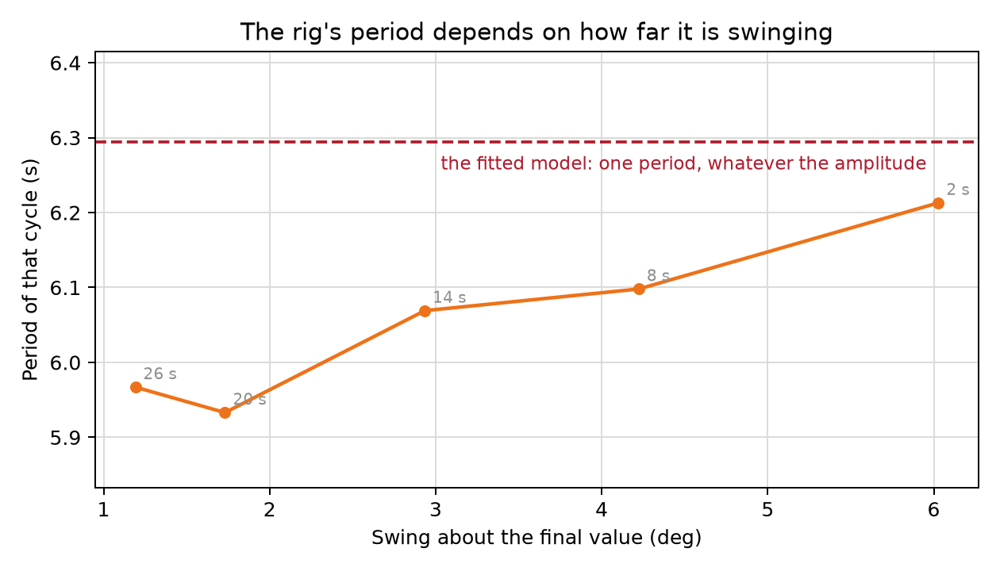
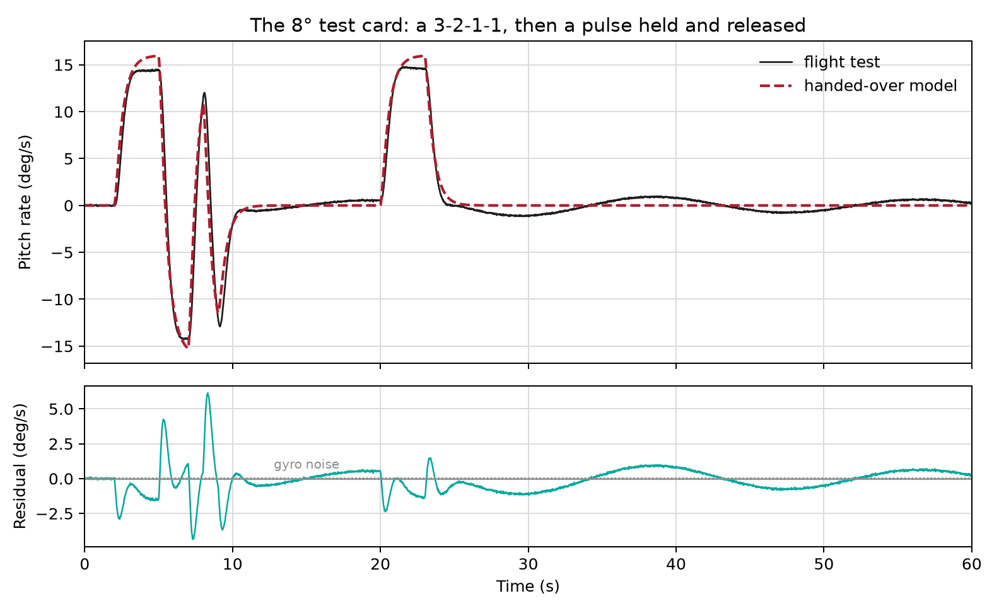
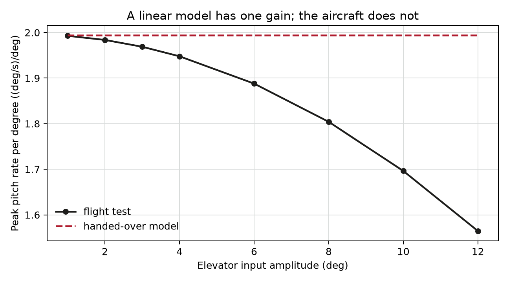

Lecture 2: Requirements and models you can trust¶
There is no right answer until you say what you want. In this session you will write requirements that can be met, missed or argued about, and you will learn what you need to know about a model to understand its utility..
Learning outcomes
By the end of this week you should be able to:
- write measurable time- and frequency-domain requirements, and justify each from a vehicle's role or handling qualities;
- validate a linear model against measured or flight-test data, quantifying where it fits and where it does not;
- explain linearisation about a trim condition, and identify when a design leaves the region where it holds;
- state the assumptions a model rests on, and bound its uncertainty for use in design.
Where we are¶
You have fitted a second-order model to a measured response, agreed a requirement out loud, and designed a controller against that model. Three questions before any of today's material, and answer them before you read on:
- You fitted \( K \), \( \omega_\mathrm{n} \) and \( \zeta \) from one recording. Which of the three do you trust most, and which least?
- A classmate's fit differs from yours by 10% in \( \zeta \). Is one of you wrong?
- Your design met the requirement in simulation. What would have to be true for it to meet the requirement on the rig?
How much of a problem is this?¶
Here is the model, simulated with the step that was actually applied, drawn on top of the recording it was fitted to. Note the residual - more on that later.
![Two panels. The upper panel shows the measured elevation and the fitted model's response to the same 2 V step over 60 seconds. For the first two oscillations the two traces lie on top of each other; after about 12 seconds they drift apart in time, and by 30 seconds the model's peaks fall where the measurement's troughs are. The lower panel shows the difference between them: almost nothing for the first ten seconds, then a growing oscillation at the same frequency as the signal, reaching about 1.3 degrees.](figures/rig-overlay.png)
Before you read the next paragraph, commit to an answer. The model and the machine disagree. How much of a problem is this?
It depends entirely on what you are going to do with the model, and that is the first idea of the session. Over the first 10 s the two traces differ by 2.8% of the 6.80 degrees the step asked for, with a worst case of 0.41 degrees. Over the first 60 s they differ by 8.9%, worst case 1.33 degrees. The model's not bad, it's just a representation over a particular window. Whether it applies depends on what we're using it for.
This data has a defect
The arm was already swinging through 4.21 degrees when the step arrived. M.003 is a busy room: four of these rigs close together, a bank of TQ modular air-flow benches, and the ventilation, which is the biggest single source of disturbance. A step response starts from rest, so a model simulated from rest begins in the wrong place.
L02_validate.m fits the starting state along with the rest, over the
window shaded above: that is how the model and the machine were put in the
same place, and MATLAB's own compare does the same thing. Retaking it would have been better, which is why
Part 1 of the laboratory asks you to plot every trace before you leave the
room and take it again if the arm is still moving.
A steady start still only gives you one model, fitted at one trim elevation and one step size. How widely it applies is a good question, and no single recording answers it. Taking the same step from a different trim, and different step sizes from the same trim, gives you more of an idea about that.
So: what would a requirement have to say for this argument to be settleable?
A requirement is a number, a test, and a reason¶
You already have the first two. A requirement names a quantity, gives it a number, and says how you would measure it: "settles within 2% of the demand inside 8 seconds, measured from a 7.5 degree step". The third is what separates a requirement from a preference.
Every number in a requirement comes from somewhere, and you have to be able to say where. Here are four possible sources:
| Where the number came from | Example |
|---|---|
| The vehicle's job | A surveying aircraft holds a line to a tolerance set by the camera's swath. |
| A published handling-qualities criterion | A closed-loop damping ratio inside the band the applicable standard allows for that class of aircraft and that phase of flight. |
| A physical limit you measured | The demand saturates 8.6 V above the trim, so the controller may ask for no more than 6.0 V. |
| An agreement in the room | "Eight seconds", because nobody could think of a reason for six or ten. |
The last one is legitimate. What is not legitimate is dressing it up as one of the first three. Write "agreed, no stronger basis" beside it and revisit it when there is one.
What a requirement asks of your model¶
A time-domain requirement is also a statement about frequency, whether or not it is written that way. For a response dominated by a second-order pair, overshoot fixes the damping ratio and the settling time then fixes the natural frequency:
with \( M_\mathrm{p} \) the overshoot as a fraction and \( t_\mathrm{s} \) the settling time to 2%. So:
| Requirement | \( \zeta \) | \( \omega_\mathrm{n} \) |
|---|---|---|
| Settle to 2% in 1.5 s, overshoot at most 10% | 0.591 | 4.51 rad/s |
| Settle to 2% in 2.0 s, overshoot at most 10% | 0.591 | 3.38 rad/s |
| Settle to 2% in 3.0 s, overshoot at most 10% | 0.591 | 2.26 rad/s |
| Settle to 2% in 4.0 s, overshoot at most 20% | 0.456 | 2.19 rad/s |
That \( \omega_\mathrm{n} \) is the frequency the closed loop will be working at. Your model has to be right there. A requirement asking for 4.51 rad/s on a model validated at 2 rad/s will cause you problems, however carefully the simulation was run.
Make these testable¶
Here are some things you (or a less-enlightened control designer) might say. Rewrite each one as a requirement, and against each one name which of the four sources its number came from.
- "It should feel crisp."
- "It mustn't wander off while the camera is running."
- "Don't let it fight the pilot."
For each, write down one number you had to invent and what you would do to find the right value.
Core expectation: a quantity, a number and a test for at least one of the three.
Going further: all three, with its source named for each, and an argument about the third, which is the only one of them with a person in the loop.
Compare with the pair next to you: you might not agree, which makes for some good learning.
You have a requirement. Now, what does it take to use it to design against a model?
What makes a model trustworthy¶
Not being right. Nothing is right. A model is trustworthy when we know three things:
- Over what range of frequency, or over what time. The elevation model above holds for 10 s and not for 60 s.
- Over what amplitude, and about what trim. Every linearisation is taken about an operating point, and the model is a claim about motion near it.
- How far out it is inside that range. A number, from a residual.
Read the residual, not the fit percentage¶
A fit percentage hides a great deal
Two traps, both common.
MATLAB likes to give you a 'fit percentage', but doesn't tell you much about what it actually is. RMSE (root-mean-squared error) is useful but obscures a lot.
Fitted over what? Match the elevation model's starting state over the whole 60 s instead of the first 10 s. The 60 s residual improves a little, from 8.9% to 8.3%, and the 10 s residual more than doubles, from 2.8% to 6.7%. Least squares spreads the error over whatever you hand it, so you have traded accuracy where the model was good for accuracy where it was never going to be. The window is part of the answer and has to be quoted with it.
Against what? A residual of 5% is unreadable until you say 5% of what. Throughout this session it is a percentage of the change the model says the input will produce, which is a number you have before you measure anything and which is comparable between recordings of different size. A percentage of the signal's own range is neither.
Subtract the model's response from the measurement and you get the residual. Its size is one piece of information and its shape can tell you even more:
| What the residual looks like | What it is telling you |
|---|---|
| Flat, and the size of the sensor noise | Nothing systematic left. The model is as good as the measurement. |
| A slow drift one way | Lots of potential causes. Maybe the trim shifted? |
| An oscillation at the signal's own frequency, growing (and then maybe shrinking) with time | The frequency is out. The two start together and separate by a little each cycle. |
| An oscillation at some other frequency | The plant has a mode that this model does not represent. |
The last two are the useful ones, and neither is particularly evident in a single fit percentage. The earlier figure shows the third case: the residual is small for two oscillations, then grows into a wave at the same frequency as the signal. A small error in \( \omega_\mathrm{n} \) accumulates as phase, and after enough cycles the model's peaks arrive where the measurement's troughs are.
Linearisation holds near the trim, and "near" is a number¶
A linear model comes from a nonlinear machine by taking the first term of a Taylor expansion about an operating point. That is exact at the operating point and approximate away from it, and the question a design has to answer is: how far away is still close enough?
The answer is never just "small". Small compared with what? The honest version names a quantity and a number, and the only way to get one is to excite the machine at two sizes and compare. You will do exactly that twice today, on two different (simulated) machines, and get a different answer each time.
Four assumptions sit behind the elevation model you fitted, and each one names a way it can fail:
| The model assumes | Where that gives way |
|---|---|
| The arm swings about a fixed trim elevation. | Gravity's restoring moment on an arm goes as \( \sin\varepsilon \), so the stiffness, and with it \( \omega_\mathrm{n} \), depends on the trim you fly about. |
| The swing about that trim is small. | A larger swing covers more of that curve, so the frequency you fit moves with the amplitude you fit it at. |
| Friction is viscous, proportional to rate. | Anything dry or sticking takes a different fraction out of a small swing than a large one. |
| Elevation moves on its own. | The three axes are coupled, and this model only has one input and one output. |
The first two are settled by measurement rather than by argument, which is what Part 1 of the laboratory is asking for when it suggests repeating the step from a different trim and at a different size. Two recordings answer a question one cannot. (We can also infer from a physics-based model, but who has time for that?)
What a linear model cannot do, whatever its coefficients:
- change its gain with the size of the input. Double the input and the output doubles, exactly.
- change its natural frequency with the size of the motion. One set of poles, one frequency, every amplitude.
So any measured dependence on amplitude is outside the model by construction, and no amount of refitting brings it inside.
Where the rig's model fits, and where it doesn't¶
Open L02_validate.m and run it on
your own recording, or on the sample if you have not got one of your own. It
starts the model where the arm actually was, draws the residual, and then
measures the period of the oscillation one cycle at a time.
Core expectation: the overlay and the residual table, 2.8% over the first 10 s against 8.9% over 60 s, and a residual whose shape you can name. Drag the fit window and watch both numbers move.
Going further: what the period does as the swing decays, cycle by cycle. Predict which way it goes before you look.
The script pairs each recording with the model that was fitted to it: your own fit against your own recording, and the shipped model against the shipped sample. There are four rigs in the laboratory and they do not share a model, so crossing the two would make the residual a comparison between two machines rather than a statement about either.
Then look at what the period does as the swing decays.

The period falls from 6.213 s when the arm is swinging through 6.03 degrees to 5.967 s when it is swinging through 1.19 degrees, about 4%. Below a swing of about ten encoder counts, which on this rig is 0.086 degrees each, the peaks are likely disturbances rather than the rig, so the measurement stops there.
Before believing it, check it against something that cannot fail the same way. Those five periods are gaps between crossings of the final value, so they are only as good as the final value you assumed:
| Cycle begins at | Period | Swing about the final value |
|---|---|---|
| 1.89 s | 6.213 s | 6.03° |
| 8.10 s | 6.098 s | 4.22° |
| 14.20 s | 6.069 s | 2.93° |
| 20.27 s | 5.933 s | 1.73° |
| 26.20 s | 5.967 s | 1.19° |
The script also times peak to peak and trough to trough, neither of which uses the final value at all. Both fall the same way. Their individual figures move by a few hundredths of a second between runs and between implementations, because the peak of a signal quantised to 0.086° has a flat top and the exact sample you call the peak is a choice. The trend survives all of it; the third decimal place does not, so do not quote it.
Why does it do that?
Something about this machine depends on how far it is moving. Which something is an open question in this laboratory: the obvious candidates are the way the restoring moment varies with elevation, and friction. Are there experiments we could do to identify this?
You do not need the cause to act on the measurement. A linear model has one natural frequency and this machine does not, so the fit is a claim about one amplitude, whatever the reason. Be clear about this when you describe and share your models.
Agree with your neighbour on one sentence: the elevation model may be used for …. Keep it, because it is the shape of what you write in the second hour.
Now the same job on something you did not fit yourself.
The case: a pitch model and two flight-test records¶
A small fixed-wing aircraft. The flight dynamics side of the house has derived a third-order pitch model from its geometry and its aerodynamic data and handed it over:
in degrees of attitude per degree of elevator. Pitch rate lags the elevator with a time constant of 0.5 s and a steady gain of 2 (deg/s) per degree, the servo lags by 0.1 s, and attitude is the integral of pitch rate.
You have also been handed two flight-test records, 60 s each, logged at 50 Hz, with elevator, pitch rate and pitch attitude. Both fly the same test card:
- a 3-2-1-1: four held elevator segments of 3, 2, 1 and 1 seconds, alternating in sign. It puts energy over about a decade of frequency around the fast pitching motion.
- then a pulse held for three seconds and released, which is how a slow mode is excited.
One record flies the card at 2 degrees of elevator input, the other at 8 degrees. (NB: a 'test card' is the instruction sheet that a pilot uses to fly a defined set of activities, of which a '3-2-1-1' is a classic. An example is in the video below; note that this is roll and yaw not elevator).
These records are synthetic
They were generated by a model, no aircraft was flown. The structure of what you will find is real: all of it happens to real models against real flight test, and the reasons are the same.
Validate it, bound it, write the requirement¶
Open L02_uav_case.m, with
uav-doublets.mat beside it. You'll either need them in the lab folder, to add both folders to your MATLAB workspace.
Core expectation, plot the overlaid test data and model response, and their residual, then review the three findings below.
Going further: write the bound the model may be used inside, and check one of the requirements you wrote earlier against it.
Simulate the handed-over model with the elevator that was actually flown, subtract, and look at the residual in two windows.
![Two panels over 60 seconds. The upper panel shows measured pitch rate and the model's prediction for the 2 degree test card: they agree closely through the 3-2-1-1 between 2 and 10 seconds and through the pulse from 20 to 23 seconds, but after the pulse is released the measurement makes a slow wave of about plus and minus 0.3 degrees per second while the model stays at zero. The lower panel is the residual, with the gyro noise level marked: sharp excursions of nearly 2 degrees per second during the fast input, then a smooth slow oscillation lasting the rest of the record.](figures/doublet-small.png)
Quote the residual against the pitch rate the model says the input will produce, which is its steady gain of 2.000 (deg/s)/deg times the elevator, so 4.00 deg/s on the 2 degree record. Normalise by the aircraft's own gain instead and you are dividing by the thing you are trying to find out.
On the 2 degree record the residual is 14.2% over the 3-2-1-1 and 4.5% after the release, peaking at 0.38 deg/s. The rate gyro contributes about 0.04 deg/s RMSE, which is 1.0%, so neither number is noise.
Observation 1: What is left after the release has a frequency¶
From 24 seconds the elevator is back at zero and the model's pitch rate decays to zero with it. The record does not: it holds a smooth oscillation of period 17.9 s, which is 0.35 rad/s, and amplitude about 0.28 deg/s.
You have met that motion in the flight dynamics half of this unit. The handed-over model cannot produce it: two real poles and an integrator, so it has no oscillation available at any frequency. A residual with a frequency in it is a mode the model does not have.
Observation 2: During the fast input, the model is wrong above a frequency¶
The larger residual over the 3-2-1-1 is not a missing mode, it is the model's shape. Throw away everything above a cut-off, compare what is left, and the error sorts itself by frequency:
| Everything below | Residual, 2 degree record | Residual, 8 degree record |
|---|---|---|
| 0.5 rad/s | 1.0% | 1.8% |
| 1.0 rad/s | 1.8% | 2.8% |
| 1.5 rad/s | 3.2% | 3.6% |
| 2.0 rad/s | 5.1% | 4.6% |
| 3.0 rad/s | 8.5% | 7.1% |
| 5.0 rad/s | 12.0% | 10.2% |
| 10 rad/s | 13.8% | 12.0% |
The model is not wrong. It is wrong above about 2 rad/s, and that is a sentence a designer can act on. The two records agree on where the error lives and disagree about how much of it there is, which the next section explains.
![Bode magnitude and phase from elevator to pitch rate for the aircraft and for the handed-over model, from 0.01 to 30 radians per second. The two lie on top of each other at low frequency apart from a small resonant peak in the aircraft's magnitude near 0.35 radians per second; they separate above about 2 radians per second, where the aircraft falls faster and its phase runs away towards minus 270 degrees while the model's approaches minus 180. A band from 0.37 to 2.35 radians per second is shaded and labelled as being within 2 decibels and 15 degrees.](figures/validity-band.png)
The figure compares the frequency-domain response of the model with the experimental response of the aircraft. Compare the band it marks, 0.37 to 2.35 rad/s, with the cut-off table you built from the data alone. The lower edge is the slow mode and the upper edge is where things diverge at higher frequencies. Note we've defined our range of validity - 'within 2dB and 15 degrees'.
Observation 3: How hard you push it changes the gain¶

A residual that sits to one side of zero while the input is held is a gain error, and this one appears only on the larger record. Take the pitch rate held during the first and longest segment of the 3-2-1-1, and divide by the elevator that produced it:
| Elevator | Pitch rate per degree |
|---|---|
| 2 degrees | 1.980 (deg/s)/deg |
| 8 degrees | 1.798 (deg/s)/deg |
| The model, at any amplitude | 2.000 (deg/s)/deg |
The bigger input gets about 9% less out of each degree. A control surface at a large deflection is less effective than the same surface at a small one, and no linear model can represent that. So the bound has an amplitude in it as well as a band.

Extension: Can I ask my model to do this?¶
If you manage to work through the three observations: write the model boundaries as three lines that somebody who was not in the room could act on, then take a requirement from the first hour, convert it to an \( \omega_\mathrm{n} \), and say whether you are entitled to demand it of your model.
A settling time to 2% of 3.0 s with at most 10% overshoot needs \( \omega_\mathrm{n} = 2.26 \) rad/s, which sits inside the band. A settling time of 2.0 s needs 3.38 rad/s, which does not. Possible resolutions to the second are to relax the requirement (and note clearly your confidence level in the model) or to go and fly more test points. Don't just design there anyway and report the simulation!
What the room found¶
Three things to bring back, and one disagreement that is worth having.
- The bound. Frequencies between the slow mode and about 2 rad/s, elevator inputs of a few degrees, with an error of about 5% inside that.
- The missing mode, at 0.35 rad/s, which the handed-over model has no way of producing.
- The amplitude. One gain in the model, two different gains in the data.
The disagreement: is this model good enough? It depends entirely on the requirement, which is why the two halves of this session are one session. The same model is fine for a 3 second settling time and unsupported for a 2 second one. "Good enough" is not a property of a model.
What this lecture's content cannot do¶
You now have a model you can defend and a requirement you can test. That is everything the last two sessions have been asking for, and it is still not a controller that works.
Nothing in today's material predicts what happens next. The model is validated, the requirement is met in simulation, the linear analysis is correct, and the response still goes a long way past where it was asked to stop.
Ask yourself what the linear model quietly assumed about the elevator, and what happens to a controller's memory while the aircraft is not listening.
A model you trust and a requirement you can test, and the controller still saturates.
Summary¶
- A model has a range of validity. It represents the frequencies or the time it holds over, the amplitude and trim it was taken about, and how far out it is inside that.
- Read the residual's shape, not just its size. An oscillation at the signal's own frequency means the frequency is out; a wave at another frequency means a missing mode; flat and noisy at the sensor's own level means the model is as good as the measurement.
- Quote the window. The same model and the same recording gave 2.8% over 10 s and 8.9% over 60 s.
- A fit is limited to its source data. One recording, steady before the step, gives one model at one trim and one step size. Saying how far that model reaches takes a second recording, taken somewhere else.
- A linear model has one gain and one frequency, at every amplitude. The rig's period moves by 4% as its swing decays; the aircraft's gain falls 9% between 2 and 8 degrees of elevator. Neither is something a refit can mend.
- A requirement names a quantity, a number, a test and a source. "Agreed in the room" is a legitimate source as long as it is written down as one.
- A requirement is also a frequency. Check it against the band your model was validated over before you design, not after.
The same requirement, written as a loop gain¶
The table above stops at \( \omega_\mathrm{n} \), which is as far as the room needs to go to check a requirement against a validated band. The design work that follows wants the same requirement in terms of the loop gain, so here it is. Take the closed loop implied by \( \zeta \) and \( \omega_\mathrm{n} \),
and recover the loop gain that would produce it, \( L = T/(1-T) \). Its gain crossover \( \omega_\mathrm{gc} \) and phase margin are:
| Requirement | \( \omega_\mathrm{n} \) | \( \omega_\mathrm{gc} \) | Phase margin |
|---|---|---|---|
| Settle to 2% in 1.5 s, overshoot at most 10% | 4.51 rad/s | 3.26 rad/s | 58.6° |
| Settle to 2% in 2.0 s, overshoot at most 10% | 3.38 rad/s | 2.44 rad/s | 58.6° |
| Settle to 2% in 3.0 s, overshoot at most 10% | 2.26 rad/s | 1.63 rad/s | 58.6° |
| Settle to 2% in 4.0 s, overshoot at most 20% | 2.19 rad/s | 1.79 rad/s | 48.1° |
The phase margin depends only on the overshoot and the crossover only on both,
which is the reason a design is usually set up as "a crossover and a margin"
rather than as a settling time. L02_uav_case.m prints these alongside
\( \omega_\mathrm{n} \).
Fit metrics, properly¶
The lecture uses one number: the residual's RMSE as a percentage of the change the input asked for. It is the one worth carrying, because it is comparable between recordings. Three others you will meet, and what they do differently.
Normalised root-mean-square error, which is what MATLAB's compare reports
as a fit percentage:
with \( y \) the measurement, \( \hat{y} \) the model's output and \( \bar{y} \) the measurement's mean. It is normalised by the signal's own variation, so a quiet recording and a violent one are not comparable, and a model that only ever predicts the measurement's mean scores 0% rather than something arbitrary.
Coefficient of determination, \( R^{2} \), is the same quantity squared and subtracted from one. It rewards extra parameters, so comparing models of different order on \( R^{2} \) alone always picks the largest one.
Whiteness of the residual. The sharpest test, and the one closest to what this session teaches by eye: if anything systematic is left, the residual is correlated with itself at some lag, or with the input. System identification packages report both as validation tests. A model whose residual is white has nothing left in it that the data could tell you about.
None of these replaces plotting the thing. Every one of them returns a single number for a residual whose shape was the message.
Handling qualities as a source of requirements¶
More on this in Flight Dynamics, but to summarise here: flying qualities criteria exist so that "it feels wrong" becomes something a specification can be written against. The structure, which is what to carry away:
- Levels. Roughly: Level 1 is satisfactory, Level 2 is acceptable with an increase in pilot workload, Level 3 is controllable but not adequately. Requirements are usually written as "Level 1 throughout the operational envelope".
- Flight phase categories. The same aircraft is held to different numbers in a rapid manoeuvre, in a slow and precise task such as an approach, and in cruise. A requirement that does not say which phase it applies to is incomplete.
- What gets constrained. For the longitudinal short period, a band on the damping ratio and a relationship between the undamped frequency and the normal acceleration per unit angle of attack. The second is the control anticipation parameter, and it exists because a pilot judges an aircraft by how quickly it starts to respond, not only by where it ends up.
- Where the numbers live. In the standard applicable to the aircraft's class and the programme's contract. The numbers are not reproduced here, because they depend on the class and the phase and a number quoted without both is worse than no number.
Two consequences for a control design. The criteria constrain the closed-loop aircraft, the pilot included, so they are requirements on your design rather than on the airframe. And a deficiency found in the flight dynamics half, a mode that is too lightly damped or too slow, arrives on your desk as a requirement: augment it until it meets the criterion.
Further reading¶
- Dorf and Bishop, section 2.3: Linear approximations of physical systems — linearisation about an operating point.
- Dorf and Bishop, sections 2.5-2.6: The transfer function of linear systems; block diagram models.
- Dorf and Bishop, sections 5.2-5.3: Test input signals; performance of second-order systems — where time-domain requirements come from.
Dorf, R. C. and Bishop, R. H. Modern Control Systems. Pearson. Section numbers are the same in the 12th, 13th and 14th editions; only the page numbers differ. It is in the library, and is for additional study and consolidation, not a substitute for the handout.